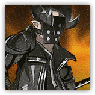

萨卡兹百夫长 Sarkaz Centurion
近战 远程 物理 法术；精英 萨卡兹
|
 |
萨卡兹雇佣兵。整合运动干部，带领一部分萨卡兹雇佣兵进行正面作战。有限的情报显示他平时较为沉默寡言，无法从其口中获得情报。 |
萨卡兹百夫长丨Sarkaz Centurion
大型类人（萨卡兹），混乱中立
| AC 15 | 先攻 +4（14） |
| HP 180（19d10+76） | |
| 速度 30 尺 | |
| 调整 | 豁免 | 调整 | 豁免 | 调整 | 豁免 | |||||||||
|---|---|---|---|---|---|---|---|---|---|---|---|---|---|---|
| 力量 | 21 | +5 | +9 | 敏捷 | 11 | +0 | +0 | 体质 | 19 | +4 | +8 | |||
| 智力 | 11 | +0 | +0 | 感知 | 13 | +1 | +5 | 魅力 | 16 | +3 | +3 |
| 技能 运动+9，求生+5，察觉+5，威吓+7 |
| 抗性 毒素 |
| 装备 巨剑，布甲 |
| 感官 黑暗视觉60尺，被动察觉13 |
| 语言 通用语，萨卡兹语 |
| CR 9（5,900 XP；PB +4） |
特质 Traits
魔法抗性 Magic Resistence。萨卡兹为抵抗法术和其它魔法效应而作的豁免检定具有优势。
动作 Actions
多重攻击 Multiattack。萨卡兹百夫长发动两次魔能大剑攻击，他可以将其中一次攻击替换为使用地裂（若可用）。
魔能大剑 Eldritch Greatsword。近战或远程攻击检定：+9，触及5尺或射程30尺。命中：19（4d6+5）黯蚀伤害，若目标体型不大于中型则应击倒地。失手：5黯蚀伤害。
地裂 Earth's Crack（充能4~6）。 敏捷豁免检定：DC17，至多2名60尺内萨卡兹百夫长可见的位于地面的生物。失败：35（10d6）黯蚀伤害并倒地。成功：仅受半伤。
附赠动作 Bonus Actions
佣兵指挥官 Mercenary Commander（2/日）。 萨卡兹百夫长选择自己以及60尺内至多2名可以听见其声音的盟友，提振其士气，为其各添加10点临时生命值。
反应 Reactions
战术指挥 Tactical Command。触发：当一名可以听见并看见萨卡兹百夫长的盟友在攻击检定中失手时。响应：若百夫长可以看见对方，则令对方立刻重掷其中一枚攻击检定的D20掷骰。